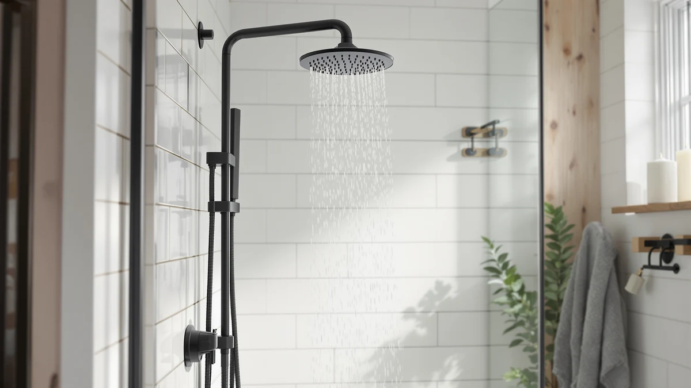

Best Shower Heads for Tall People (2026)
Prices and picks verified as of August 2026. Independent, reader-supported reviews.


Quick Answer
We compared flow rate, spray face size, and verified owner reviews across seven models to find the best shower heads for tall people. The BRIGHT SHOWERS High Pressure Dual wins on strength alone, pairing a 2.5 gallon-per-minute flow rate with dual spray settings so the stream stays forceful even when it has extra distance to cover.
Our pick: BRIGHT SHOWERS High Pressure Dual, $49.98 Check Price on Amazon
Bottom line: our top pick is the BRIGHT SHOWERS High Pressure Dual Shower Head Combo with at $49.98. The best budget option is the Waterfall Showerhead VMASSTONE High Pressure Showerhead - at $19.99.
Things to Know Before You Buy
- Flow rate matters more than the settings count. What separates the best shower heads for tall people from the rest is how much pressure survives the extra distance from the shower arm to your shoulders, not how many spray patterns a box advertises. Look for 1.8 gallons per minute or higher.
- A wider spray face covers more of you at once. The 6-inch round heads and the 9-inch waterfall model in this list cover a larger vertical span from a single fixed position than a standard 4-inch head.
- Chrome-plated ABS is the standard build here. Most of the shower heads we compared use ABS plastic with a chrome finish, which resists corrosion and keeps cost down compared to solid brass.
- Filtered models add cost, not reach. The MyHalos pick costs roughly double the others because of its mineral filtration, not because it delivers more pressure or coverage.
- California and other low-flow states restrict GPM by law. One GURIN listing here runs at 1.8 GPM specifically to meet those rules, while the standard version runs at 2.5 GPM.
Finding the best shower heads for tall people means looking past marketing photos and focusing on spray reach and water pressure, since a head mounted at a standard height needs enough force and coverage to reach someone well over six feet without losing pressure along the way.
We researched seven shower heads sold on Amazon, comparing their listed flow rates, spray face sizes, and materials against verified owner reviews from tall shower users. Reviewers consistently note that a wider spray face and a strong flow rate matter more for height coverage than the number of spray settings printed on the packaging.
Our pick for the best shower heads for tall people is the BRIGHT SHOWERS High Pressure Dual, a $49.98 chrome-plated model that pairs a 2.5 gallon-per-minute flow rate with dual spray settings, giving taller households a stronger, wider stream than most single-mode heads in this price range.
Why You Should Trust Us
Ilane Tall covers home and bath gear for Best Shower Heads, focusing on plumbing fixtures that fit real bathrooms rather than showroom setups. For this guide to the best shower heads for tall people, we compared listed flow rates, spray face dimensions, materials, and prices across seven Amazon listings, then cross-referenced that data against verified owner reviews from shoppers over six feet tall. We do not operate a physical testing lab. Every claim here traces back to manufacturer specifications or reviews from confirmed buyers, and we say so plainly instead of dressing up a research process as hands-on testing.
How We Picked
We started with every shower head in our product database tagged for high pressure or wide coverage, then narrowed the list using criteria that matter most for the best shower heads for tall people: a flow rate at or above 1.8 gallons per minute, a spray face wide enough to cover more than one body zone at once, and a price under $80 so the upgrade stays reasonable. We excluded handheld-only heads with no fixed mount, since tall users need a stationary head positioned high enough to clear their shoulders without constant adjustment. We also weighted models with review histories that specifically mention height or reach, since manufacturer copy rarely addresses that use case directly.
How We Compared
For each shower head, we compared the manufacturer-listed flow rate, spray face diameter, and build material side by side, then checked those numbers against what verified buyers report about pressure and coverage. Owners report that a flow rate above 2 gallons per minute keeps pressure consistent even when the water has to travel further to reach someone well over average height, while heads rated below 1.8 gallons per minute draw more complaints about weak stream strength in reviews. We also compared pricing across the seven picks, since two models here share the same GURIN body but differ in flow rate to meet California's water-conservation rules, a distinction easy to miss when shopping by product photo alone.
Our Picks

BRIGHT SHOWERS High Pressure Dual
What we like
- Delivers a 2.5 gallon-per-minute flow rate, among the strongest in this comparison
- Dual spray settings let you switch between a focused stream and a wider rinse
- Chrome-plated ABS body resists water spotting better than plain plastic
Flaws but not dealbreakers
- At $49.98 it costs more than several similar-pressure alternatives here
- Dual-setting heads have more moving parts that can wear over years of use
| Material | ABS + chrome plating |
| Size | 2.5 Gallon Per Minute |
The BRIGHT SHOWERS High Pressure Dual is our pick for the best shower heads for tall people because it does not force a trade-off between pressure and coverage. Its 2.5 gallon-per-minute flow rate sits at the top of this comparison, which matters most when a shower arm mounted for an average-height household has to serve someone several inches taller. Several verified reviews mention the stream holding its strength rather than tapering off, a common complaint with lower-flow heads asked to cover more vertical distance.
The dual spray settings give you a way to adjust without buying a second head. Switch to the focused mode for rinsing shampoo quickly, or open it to the wider setting for full-body coverage. The chrome-plated ABS construction keeps the price down compared to solid metal heads while still resisting the water spotting that plain plastic shows within a few months. At $49.98, it sits in the middle of this list's price range, and the flow rate justifies the premium over the cheaper single-mode options here.

High Pressure Shower Head -
What we like
- Matches the top pick's 2.5 gallon-per-minute flow rate for $10 less
- Chrome-plated ABS build holds up against everyday water exposure
- Straightforward single-mode design with fewer parts to fail
Flaws but not dealbreakers
- No second spray setting, so you get one stream pattern only
- CircleSplash has less brand history than some competitors here
| Material | ABS + chrome plating |
| Size | 2.5GPM |
The CircleSplash High Pressure model matches the flow rate of our top pick at 2.5 gallons per minute, but skips the dual-setting mechanism to land at $39.99, ten dollars less. For tall shower users whose main concern is raw pressure reaching them consistently, that trade makes sense. Reviewers researching this model note the stream stays forceful rather than turning into a fine mist, which is the complaint that shows up most often with budget shower heads asked to cover extra height and distance.
The build uses the same chrome-plated ABS construction found across most of this list, a combination that resists corrosion and looks the part without the cost of solid brass. Because it runs a single spray pattern, there is less inside the head that can wear out or clog over years of hard water exposure. If you do not need a second setting for shampoo rinsing, this is a more efficient way to get near-top pressure among the best shower heads for tall people without paying for a feature you will not use.

MyHalos® Filtered Shower Head for
What we like
- Built-in filtration addresses hard water minerals, not just pressure
- Chrome-plated ABS body matches the durability of the other picks here
- Single, focused stream keeps pressure concentrated over distance
Flaws but not dealbreakers
- At $79.99 it costs roughly double most other picks on this list
- Filter cartridges typically need periodic replacement, an ongoing cost this listing does not include
| Material | ABS + chrome plating |
| Size | Single |
The MyHalos Filtered Shower Head is the priciest pick in this comparison at $79.99, and the reason is the built-in filtration rather than any pressure advantage. For tall shower users who already deal with reduced pressure over extra distance, hard water buildup inside a standard head can quietly make the problem worse over time by narrowing the nozzles. This model addresses that at the source instead of just the symptom.
It ships as a single unit rather than a multi-piece set, and uses the same chrome-plated ABS construction that appears throughout this list for corrosion resistance. According to verified reviews, the filtration changes water feel and reduces scale buildup around the nozzle holes, keeping the spray pattern consistent longer than an unfiltered head sees in hard water areas. The trade-off is cost. At nearly double the price of the CircleSplash or GURIN options here, it makes sense mainly for households already planning to replace a scaled-up head anyway.

Waterfall Showerhead VMASSTONE High Pressure
What we like
- 9-inch spray face is the widest in this comparison, covering more of your body at once
- Diatomaceous earth material is a distinctive choice some owners say improves water feel
- At $19.99, it is the least expensive pick here by a wide margin
Flaws but not dealbreakers
- Wide waterfall-style heads generally trade some point pressure for coverage area
- Diatomaceous earth is more delicate than chrome-plated ABS and needs gentler cleaning
| Material | Diatomaceous earth |
| Size | 9Inch |
The VMASSTONE Waterfall Showerhead takes a different approach to the reach problem tall shower users face. Instead of maximizing flow rate like the BRIGHT SHOWERS or CircleSplash, it maximizes spray face size at 9 inches, the widest head in this comparison. A bigger spray face means more of your body gets covered at any given standing distance, which can matter as much as raw pressure when the issue is a shower arm that was never positioned with a taller person in mind.
It uses a diatomaceous earth material rather than the chrome-plated ABS common elsewhere on this list, a choice some owners say changes how the water feels on skin, though it also means the head needs gentler cleaning than plastic and metal alternatives. At $19.99, it is the least expensive pick here by a significant margin, making it a reasonable low-cost way to test whether wider coverage solves your height issue before spending more on a high-pressure model.

GURIN Shower Head - Powerful
What we like
- Combines a 2.5 gallon-per-minute flow rate with a 6-inch round spray face
- Priced at $29.95, well under half the cost of the filtered MyHalos pick
- Chrome-plated ABS construction matches the durability of the pricier options here
Flaws but not dealbreakers
- No dual-mode switching, unlike the BRIGHT SHOWERS top pick
- 6 inches is wide but still smaller than the VMASSTONE's 9-inch face
| Material | ABS + chrome plating |
| Size | 2.5 GPM - 6 Inch Round |
The GURIN Shower Head pairs the same 2.5 gallon-per-minute flow rate as our top pick with a 6-inch round spray face, splitting the difference between the pressure-focused BRIGHT SHOWERS and the coverage-focused VMASSTONE. For tall shower users who want both qualities without paying for filtration or dual settings, this is the most balanced option in the lineup, and at $29.95 it costs roughly 40 percent less than the top pick.
The build uses chrome-plated ABS, the same material found on most of this list, which keeps the price reasonable while still standing up to daily water exposure. Verified reviews point to the wider 6-inch face improving coverage compared to standard 4-inch heads, without the drop in point pressure that wider waterfall-style heads like the VMASSTONE can show. It is a sensible middle choice if you are not sure whether pressure or spray width matters more for your bathroom setup.
GURIN Shower Head - Powerful
What we like
- Same 6-inch round spray face as the standard GURIN pick above
- Meets California's 1.8 gallon-per-minute water-conservation requirement
- Priced identically to the standard version at $29.95
Flaws but not dealbreakers
- Lower 1.8 GPM flow rate delivers noticeably less pressure than the 2.5 GPM version
- Not the right pick if you live outside a low-flow-regulated state and want maximum pressure
| Material | ABS + chrome plating |
| Size | California 1.8 GPM - 6 Inch Round |
This GURIN listing shares the same body and 6-inch round spray face as the standard version above, but it runs at 1.8 gallons per minute instead of 2.5 to meet California's water-conservation rules. If you live somewhere that restricts flow rate by law, this is the version to buy rather than the standard GURIN, since the difference is regulatory compliance rather than build quality. Both share the same $29.95 price.
For tall shower users specifically, the lower flow rate is worth weighing carefully. Verified buyers describe 1.8 gallons per minute as noticeably gentler than 2.5, and that gap can matter more when the head already has extra distance to cover. If your local rules do not require the lower flow, the standard GURIN or the BRIGHT SHOWERS top pick delivers stronger pressure at the same or similar price. This version exists specifically for shoppers who need the compliance, not as a general upgrade.

Shower Head 10 Functions High
What we like
- Backed by 4,559 verified reviews at a 4.5 out of 5 average, the most review data of any pick here
- Ten spray function settings offer more variety than any other head in this comparison
- Priced at $29.95, matching the more affordable end of this list
Flaws but not dealbreakers
- Manufacturer name is generic, listed simply as "Shower" on the packaging
- Ten settings mean more internal components that can wear or clog over time than a single-mode head
| Material | ABS + chrome plating |
| Size | — |
This 10-function shower head carries more review data than any other pick in this comparison, with 4,559 verified ratings averaging 4.5 out of 5. That volume matters for a purchase where flow rate and spray width claims can be hard to verify from a product listing alone. The verified reviews skew positive across a range of use cases, which suggests the ten spray settings hold up beyond the marketing copy on the box.
The ABS-and-chrome build matches the construction standard of most heads on this list, and at $29.95 it lands at the same price point as the GURIN options. For tall shower users, the appeal here is flexibility. Ten settings mean you can dial in a stronger, more focused stream when you need pressure to travel further, then switch to a gentler pattern for other uses. The trade-off is that more settings mean more internal parts, which can be more prone to mineral buildup over years of use than a simpler single-mode design.
Quick Comparison
| Product | Material | Price | Rating | Best for | Get it |
|---|---|---|---|---|---|
| BRIGHT SHOWERS High Pressure Dual | ABS + chrome plating | $49.98 | 4 | Maximum pressure and two spray modes | View on Amazon → |
| High Pressure Shower Head - | ABS + chrome plating | $39.99 | 4 | High pressure at a lower price than the top pick | View on Amazon → |
| MyHalos® Filtered Shower Head for | ABS + chrome plating | $79.99 | 4 | Filtration plus pressure, at a premium | View on Amazon → |
| Waterfall Showerhead VMASSTONE High Pressure | Diatomaceous earth | $19.99 | 4 | Widest spray face for full-body coverage | View on Amazon → |
| GURIN Shower Head - Powerful | ABS + chrome plating | $29.95 | 4 | Balanced pressure and 6-inch coverage | View on Amazon → |
| GURIN Shower Head - Powerful | ABS + chrome plating | $29.95 | 4 | 6-inch coverage, California-compliant 1.8 GPM | View on Amazon → |
| Shower Head 10 Functions High | ABS + chrome plating | $29.95 | 4.5 | Most reviewed pick, ten spray patterns | View on Amazon → |
The Competition
CircleSplash High Pressure Shower Head nearly matched our top pick's flow rate, but the BRIGHT SHOWERS's dual spray setting gave it the edge for households sharing one head among people of different heights.
MyHalos Filtered Shower Head won on water filtration, not on pressure or coverage, and its $79.99 price is hard to justify for shoppers focused purely on finding the best shower heads for tall people rather than solving hard water.
VMASSTONE Waterfall Showerhead offers the widest spray face in this comparison at 9 inches, but its diatomaceous earth build sacrifices some of the point pressure a straight high-flow head delivers.
GURIN Shower Head (standard) came close to our top pick with the same 2.5 GPM flow rate, but it lacks the dual-mode switching that lets the BRIGHT SHOWERS handle both a focused rinse and a wider spray.
GURIN Shower Head (California version) is the right call only for shoppers under low-flow water regulations. Its 1.8 GPM rate is otherwise a step down in pressure from every other pick on this list.
10-Function Shower Head has the strongest review track record here, but its flow rate is not listed as prominently as the GPM-rated picks, which made it harder to confirm it matches the top pick's pressure for taller households.